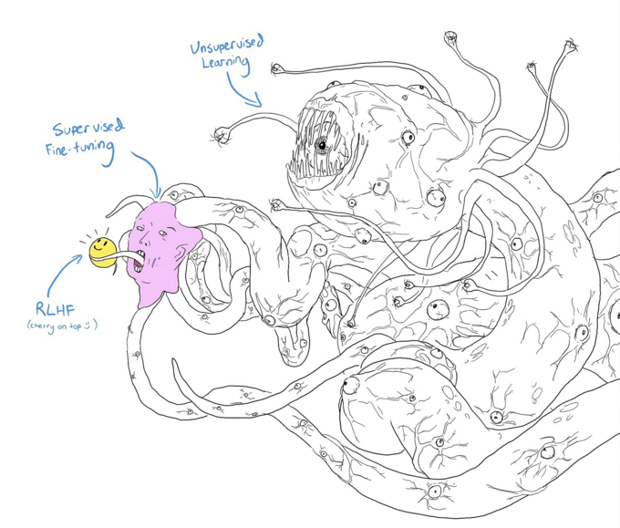

2 Développer une application LLM
Pour développer des applications utilisant un LLM, nous utiliserons la plupart du temps un modèle déjà entraîné. Exemples d’application :
- supprimer des données personnelles d’un jeu de données, pour satisfaire le RGPD
- chatbot support qui répond aux questions des clients, en utilisant une base de connaissances.
- chatbot interne qui utilise des données privées à l’entreprise : mails, système comptable, …
- exemple de question : “est-ce que la dernière facture de mr dupont a été payée ?”
- coding agent dans une entreprise sensible (défence, banque, …)
- analyseur de logs pour détecter des cyberattaques
- …
En fonction des besoins de l’application, nous essaierons des solutions dans l’ordre suivant, du plus simple au plus complexe :
TODO schéma 1. Prompter. Les LLMs modernes supportent un contexte très long. De nombreuses tâches peuvent être traitées avec un prompt suffisamment développé. TODO lien recommandation claude 2. Développer une solution RAG 3. fine-tuning d’un modèle TODO où placer l’agentique ?
Pour chaque solution, vous devrez définir des critères de succès :
- est-ce qu’elle répond au besoin ?
- est-ce qu’elle est fiable : faux positifs, faux négatifs, hallucinations ?
- est-ce qu’elle permet d’éviter les propos toxiques ?
- est-ce qu’elle est stable : est-ce qu’on doit ré-entraîner le modèle régulièrement ? Que se passe-t-il si le fournisseur met à jour le modèle ?
- quel est son coût de développement ? : développement de la solution, entraînement, tests ?
- quel est son coût d’inférence par requête ? : coût API / coûts serveurs ?
Le cours ne suit pas cet ordre, TODO expliquer raisons pédagogiques
2.1 Choix du modèle
Plusieurs choix s’offrent à vous en fonction de l’application à développer, de votre budget, de vos contraintes de localisation des données.
TODO arbre de décision, avec pros/cons
- propriétaire / ou open weights
- Open weight (ou open source par abus de langage) : le modèle peut être téléchargé et utilisé selon les conditions de sa licence. Exemples : TODO
- Propriétaire : le modèle doit être utilisé via une API ou via une application du fournisseur (Claude code, ChatGPT)
- Les abonnements des modèles propriétaires (Claude, ChatGPT) ne sont en général pas utilisable à l’échelle pour une application IA. Il faudra utiliser l’API qui a un coût beaucoup plus élevé. Exemple : TODO
- Les modèles open weights peuvent être installés chez un hébergeur cloud, comme TODO
- Les modèles open weights peuvent être customisés plus facilement : accès aux logits, fine-tuning
- cloud / hébergé dans l’entreprise
- les modèles propriétaires sont uniquement accessibles sur le cloud. Cela pose des problèmes de confidentialité et de juridiction des données.
- pour les données sensibles, vous devrez héberger le modèle dans l’entreprise ou éventuellement par un hébergeur cloud dans votre pays.
- Une autre option serait d’anonymiser les données envoyées vers le cloud
- hébergé dans l’entreprise : il faudra dimensionner l’infrastructure physique et penser à la scalabilité
- cloud : les coûts peuvent s’envoler en cas d’utilisation abusive
- rapidité
- elle se mesure en tokens/s (input ou output)
- plus un modèle est “intelligent”, plus il est rapide
- certains modèles sont plus verbeux et consomment plus de tokens
- intelligence TODO est-ce le bon terme ?
- les benchmarks permettent de comparer les modèles. TODO exemples
- les “frontier models” sont ceux qui sont les plus intelligents à un moment donné
- dans une même famille open weights, ceux qui ont le plus de paramètres sont les plus puissants
- les modèles open weight sont en général moins puissants que les modèles propriétaires, mais ils peuvent être suffisants pour votre application.
- une approche possible : envoyer les requêtes simples à un modèle léger, et les plus complexes à un modèle plus puissant
- stabilité
- si vous hébergez le modèle, vous êtes responsable des mises à jour, mais vous contrôlez le modèle.
- sur le cloud, le fournisseur peut changer le modèle ou son paramétrage, il pourrait se comporter différemment du jour au lendemain. TODO exemples news ?
- si vous hébergez le modèle, vous êtes responsable des mises à jour, mais vous contrôlez le modèle.
2.2 Echantillonage (sampling)
3 Draft
- temperature, top-k etc
- based pre-trained / instruct post-trained
- fine-tune
- hiérarchie : context > RAG > finetuning Look at bookmarks in the book, copy/paste/translate/summarize
Lab : - load a model (how to choose ?) - fp16 small range medium precision - bf16 large range low precision, but requires specific hardware - test api call: next work, yeah ! - test post-trained, see diff - prompt to extract data, see limits - fine-tune the thing
1 Comment un LLM est-il entraîné ?
Nous avons vu lors du TP3 que l’on pouvait entraîner un modèle de langage soi-même avec un corpus et quelques GPUs. Mais le modèle résultant a peu de paramètres, n’est pas performant et est spécialisé dans un langage et un style d’écriture.
En pratique, très peu de personnes ont l’occasion d’entraîner complètement un LLM. Ce chapitre permet de :
Entraîner complètement un LLM demande ressources colossales. Quelques ordres de grandeur :
1.1 Données d’entraînement
Afin d’être performant dans des tâches variées, les LLM modernes doivent utiliser de grandes quantités de données. Utiliser plus de données évite également le sur-apprentissage.
1.1.1 Biais
Une source de données communément utilisée est Common Crawl, qui contient 300 milliards de pages web. Ce genre de source pose certains problèmes :
1.1.2 Copyright
Une fois que toutes les données publiques ont été utilisées, les compagnies d’IA utilisent des données propriétaires uniques pour rester dans la course : livres avec copyright, contrats, données médicales, génomes, etc. Ces données sont de meilleure qualité et peuvent permettre aux acteurs de l’IA de se différencier.
Mais cela pose des problèmes majeurs de rétribution des droits d’auteur.
Voir
1.1.3 Modèles spécialisés
Les modèles généralistes fonctionnent très bien sur des domaines variés, comme le code, la science, les sports, …
Cependant, pour certaines tâches spécialisées comme la découverte de protéines ou le diagnostic médical, les données d’entraînement ne sont pas publiques. Pour pouvoir traiter ces tâches, un modèle spécialisé va d’abord sélectionner et filtrer un dataset spécialisé.
Il y a ensuite deux approches possibles :
Voir NVidia BioNeMo, Google MedGemma
1.2 Phases d’entraînement
Les entreprises publient souvent les deux versions d’un même modèle. On les reconnaît à leur nom : suffixe
-pt(pre-trained) et-it(instruction tuned) chez Google, suffixe-Instructchez Meta.Ces phases ressemblent à la façon dont un étudiant apprend :
1.2.1 Pré-entraînement (Pre-training)
Le pre-training est l’entraînement du modèle de base (ou foundation model), de manière auto-supervisée.
En données d’entrée, on utilise un corpus de texte filtré pour éviter certains contenus. En sortie, on aura un modèle qui :
1.2.2 Post-entraînement (Post-training)
Le post-training est la spécialisation du modèle de base pour lui apprendre à converser et à empêcher les comportements toxiques. On qualifie le modèle résultant comme étant “instruction tuned”.
Cette phase va modifier les paramètres du modèle. C’est ce qu’on appelle le finetuning. Elle se déroule en deux temps :
1.2.2.1 Supervised finetuning
Un modèle pre-trained est optimisé pour compléter du texte plutôt que pour converser. Si vous entrez “comment faire une pizza”, il va essayer de compléter la phrase, par exemple “pour une famille de quatre ?”. Le modèle n’a pas de concept de conversation et ne vas pas essayer de répondre à la question.
Nous savons qu’un modèle imite ses données d’entraînement. Pour l’encourager à générer des réponses, nous devons lui fournir des exemples de question/réponses.
Le dataset d’entraînement pour cette phase est une collection d’exemples
(prompt, response)de grande qualité, qu’on appelle données de démonstration. On va en quelque sorte montrer au modèle comment il devrait se comporter, afin qu’il puisse cloner ce comportement.Pour construire le dataset, on pourra recruter des personnes spécialistes d’un domaine. Les données de démonstration doivent contenir des prompts dont les réponses nécessite une pensée critique et du jugement.
Exemples de données de démonstration :
Ces datasets contiennent quelques dizaines de milliers d’exemples, beaucoup moins que le corpus de pre-training. Par exemple, databricks-dolly-15k contient 15 000 exemples écrits par des employés de Databricks.
1.2.2.2 Preference finetuning
Après le supervised finetuning, le modèle sait comment tenir une conversation, mais sans filtre.
Si l’utilisateur demande au modèle d’écrire un essai sur l’infériorité d’une race, ou comment fabriquer une bombe, le modèle doit refuser. Ces exemples sont évidents, mais d’autres cas sont plus délicats. Comment est-ce que le modèle doit répondre à des questions sur la religion, l’avortement, sur un conflit armé, sur l’immigration ?
Le but du preference finetuning est de conduire le modèle à se comporter selon une préférence humaine.
Il existe plusieurs approches pour que le modèle apprenne cette préférence humaine : RLHF, RLAIF.
input=(prompt, response), output=scoreCette approche est efficace : c’est elle qui a rendu ChatGPT utilisable par le grand public en 2022. Elle a cependant des limites :
C’est l’approche utilisée par Anthropic. La notation est effectuée par un modèle d’IA qui se base sur une constitution. La constitution est un document qui exprime les valeurs que doit respecter le modèle.
Voir Claude’s constitution
Cette approche a plusieurs avantages :
Cependant, cette approche possède aussi des biais. L’IA notatrice hérite des biais humains. Elle est aussi sujette à la complaisance, à préférer des réponses longues ou qui lui ressemblent.
1.2.3 Le shoggoth
Le post-training est souvent illustré par un monstre, le shoggoth :

Le fine-tuning change le comportement du modèle, mais le monstre est toujours là : c’est pourquoi on peut parfois contourner les protections d’un modèle (jailbreak).